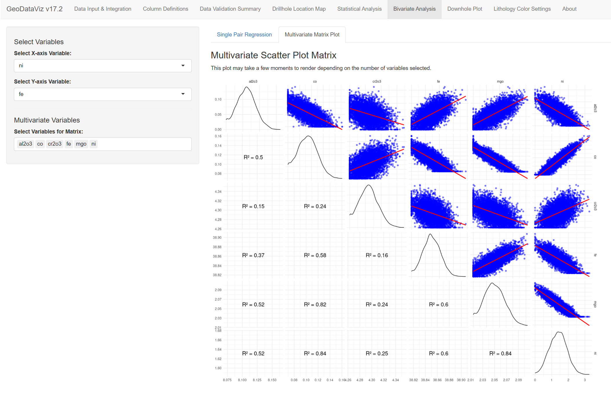
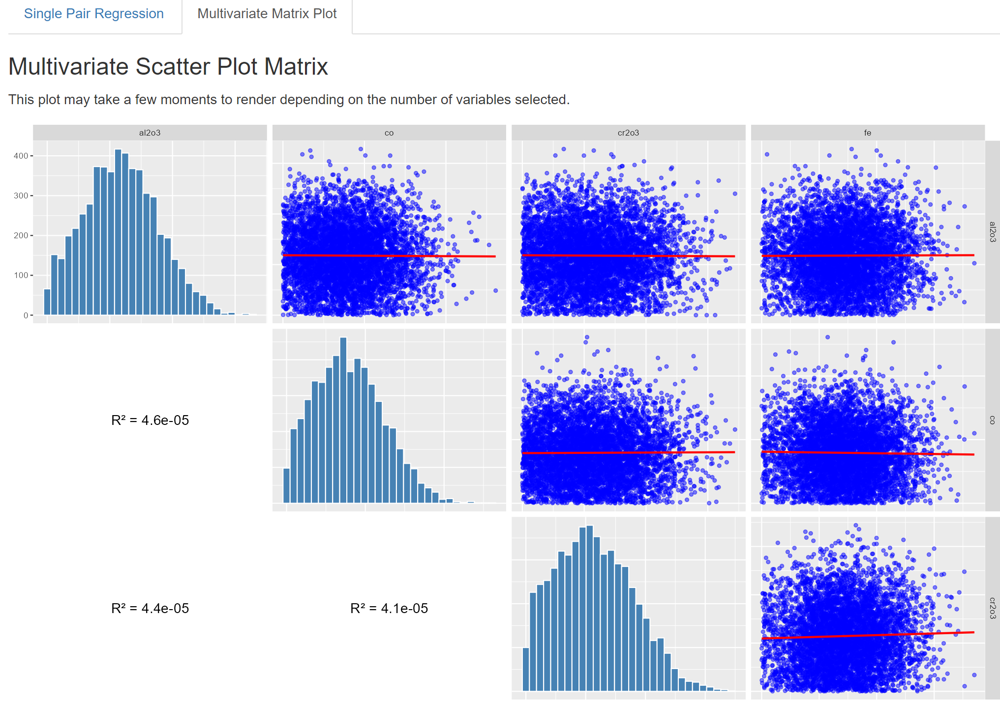

GeoDataViz: Elevate Your Geological Workflow
Modern geological data analysis and visualization platform
GeoDataViz: Elevate Your Geological Workflow
An open-source R Shiny application designed to streamline geological data visualization, analysis, and validation—all from one powerful platform.
Core Features
Statistical Analysis
Perform rapid statistical and geostatistical analysis on drillhole data with built-in validation tools and automated reporting capabilities.
3D Visualization
Create interactive 3D plots and geological models to visualize your exploration data dynamically with real-time manipulation controls.
Data Validation
Comprehensive QA/QC tools to ensure data quality and accuracy throughout your workflow with automated flagging systems.
Project Roadmap
Open Source Version (Current)
- ✅ Complete drillhole visualization
- ✅ Statistical analysis tools
- ✅ Interactive 3D plotting
- ✅ Data validation & QA/QC
- ✅ Export capabilities
- ✅ Cross-platform compatibility
Advanced Features (Pro Version)
- 🚀 Automated reporting system
- 🚀 Resource estimation modules
- 🚀 Pit optimization tools
- 🚀 Advanced geostatistics
- 🚀 Machine learning integration
- 🚀 Cloud deployment options
Application Showcase

Statistical Analysis Dashboard
Comprehensive exploratory data analysis tools designed specifically for geological datasets with automated statistical reporting.

Interactive 3D Visualization
Advanced drillhole and geological modeling with real-time manipulation, cross-sections, and dynamic filtering capabilities.
Technical Stack & Integration
R Ecosystem - Shiny for web applications - tidyverse for data manipulation - sf for spatial operations - plotly for interactive plots
Geological Packages - gstat for geostatistics - sp for spatial analysis - rgl for 3D graphics - Custom geological functions
Performance - Optimized rendering - Lazy loading - Efficient memory usage - Responsive design
Integration - Import from multiple formats - Export to industry standards - API connectivity ready - Extensible architecture
About This Project
GeoDataViz emerged from a vision to promote open-source solutions in the geological community. This project represents my commitment to democratizing access to powerful geological analysis tools.
By integrating popular R packages with modern web technologies, GeoDataViz aims to become the go-to workbench for geoscientists worldwide. The platform bridges the gap between traditional geological software and modern data science approaches.
Key Principles: - Open source accessibility - Industry-standard compliance
- User-centric design - Continuous community feedback - Performance optimization
Get Involved
Professional Network
Connect with me on LinkedIn for the latest developments, geological insights, and industry discussions.
Open Source Community
Join our growing community on GitHub. Contribute code, report issues, request features, or simply star the repository.
Ready to Transform Your Geological Workflow?
Experience the power of modern geological data analysis. Try GeoDataViz today and discover how open-source tools can revolutionize your exploration projects.